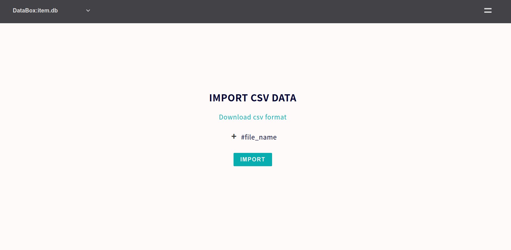

Data Shell
"Data shell" manage "databox" that is mainly designed to be used by App shell. Data shell is interface of manage databox and it can ensure data integrity utilizing hash chain.
Key value store
Data will be saved in databox as key value type of data sets like this. view of databox will be table on Web App.
# DataboxA
---------------------------------------------------------------------------------------------
dataset1:{ primary_key(col1):value, key(col2):value, key(col3):value, ... key(colX):value }
dataset2:{ primary_key(col1):value, key(col2):value, key(col3):value, ... key(colX):value }
dataset3:{ primary_key(col1):value, key(col2):value, key(col3):value, ... key(colX):value }
dataset4:{ primary_key(col1):value, key(col2):value, key(col3):value, ... key(colX):value }
..
datasetX:{ primary_key(col1):value, key(col2):value, key(col3):value, ... key(colX):value }
----------------------------------------------------------------------------------------------
Feature
small-shell databox could have both feature of relational database and key value storage. if you want to use databox as master database, please set specific name to primary key. if it's just used as flat data store, please set hashid to primary key. see detail as below.
Pattern1 Generate Databox as master database
Use databox as master database. in this example, item_name is set as specific primary key name.
sudo /usr/local/small-shell/adm/gen -databox
Databox Name: item.db
Primary Key Name: item_name
Primary Key Label: Item Name
Add more column to the databox? (yes | no): yes
Col2 Key Name: description
Col2 Key Label: Description
Data Type (text | select | radio | checkbox | email | num | tel | date | date-time | url | textarea | file | pdls | mls): text
Pattern2 Generate Databox as flat box
If you want to use databox as flat data store, just set "hashid" as parimary key name. value of primarykey(hashid) will be generated by system automatically.
sudo /usr/local/small-shell/adm/gen -databox
Databox Name: survey.db
Primary Key: hashid
Col2 Key Name: impression
Col2 Key Label: Impression
Data Type (text | select | radio | checkbox | email | num | tel | date | date-time | url | textarea | file | pdls | mls): select
Please list the values, separated by commas: Good,Not Good
Set this as required? (yes | no):
Directory Structure
Data will be stored on Unix file system with indexing and logging transactions.
sudo ls /usr/local/small-shell/databox/${databox}
data def file hashchain index log log.dump
Command reference
You can access datas through DATA_shell command
/usr/local/small-shell/bin/DATA_shell
Note
DATA_shell has CLI, you can use these commands with sudo small-shell
e.g.) sudo -u small-shell /usr/local/small-shell/bin/DATA_shell parama1:$param1 param2:$param2
Base params
| param | description | usage |
|---|---|---|
| authkey | Set key for authentication | authkey:$authkey |
| session | Set session token for authentication. if you have session, you don't need key | session:$session |
| pin | Set pin for authorize session token | pin:$pin |
| databox | Set target databox name | databox:$databox |
| type | Set target data | type:data , type:log |
| format | Set data format | format:html_tag , format:json , format:none |
| command | Set command | command:$command |
Command Handler params
You can exec several type of command by using DATA_shell "command:" option. by the way, commands will refer to index not refer to data file directly.
| Command | usage |
|---|---|
| exec unix command | command:grep_-v_test_"|"_wc_-l |
| just filtering data | command:word1_word2 |
| show data array | command:show_all |
| show data array with specific line or column | command:show_all[filter=wordA,wordB] |
| show data array by sorting | command:show_all[sort=option,col_num] |
| show data array by filtering specific column | command:show_all[filter=col1{word}] |
| show 100% match data with specific column | command:show_all[match=col1{word}] |
Command handler exmaple
# get data using authkey
authkey="dGVzdDoyOGZkYTJlOTFjODBkZ************"
databox="item.db"
sudo -u small-shell /usr/local/small-shell/bin/DATA_shell authkey:$authkey databox:$databox type:data command:show_all format:json
# get data using session token
session="06deccfc51ec102da4b16db09cf96345a160ce51996fa3533b******"
pin="****"
databox="item.db"
sudo -u small-shell /usr/local/small-shell/bin/DATA_shell session:$session pin:$pin databox:$databox type:data command:show_all format:json
Data Handler params
You can set or show datas using data handler
| Action | usage |
|---|---|
| Set Data | action:set |
| Get Data | action:get |
| Delete Data | action:del |
| Set id | id:$id |
| Create new dataset | id:new |
| Set data-key scope | key:key_nameA |
| Set data-keys scope | keys:key_name1,key_name2,key_name3 |
| Set data-keys as all | keys:all |
| Set value to the scope | value:$value |
| Set null value | value:%%null |
| Set input_dir | input_dir:/tmp/yyyymmdd |
| app | app:$app |
Data handler exmaple
You can set value by 2 way. first way is just typing value to the commandine with value: tag, another way is just put input_dir and upload key file which has value to the directory.
authkey="dGVzdDoyOGZkYTJlOTFjODBkZ************"
databox="item.db"
id="d5397fed4d6e0da54ed769232e9706d0f5bbf805f251b3a0b2c9083aa00e6874"
-----------------------------
# get value
-----------------------------
sudo -u small-shell /usr/local/small-shell/bin/DATA_shell authkey:$authkey databox:$databox action:get keys:all id:$id format:json
-----------------------------
# set value with CLI input
-----------------------------
# set
sudo -u small-shell /usr/local/small-shell/bin/DATA_shell authkey:$authkey databox:$databox action:set key:description value:test1 id:$id
-----------------------------
# set value with file
-----------------------------
# set
echo "test2" > /tmp/description
sudo -u small-shell /usr/local/small-shell/bin/DATA_shell authkey:$authkey databox:$databox action:set key:description input_dir:/tmp id:$id
Meta charactors in index
Some meta charactors are removed or changed to specific tags in the index to be searchable. index is just an index, data itself will not be impacted. It's required to use Meta charactors {%*%} when accessing index by executing DATA_shell with command: option.
: - {%%%}
& - {%%%%}
/ - {%%%%%}
, - {%%%%%%}
_ - {%%%%%%%}
( - {%%%%%%%%}
) - {%%%%%%%%%}
[ - {%%%%%%%%%%}
] - {%%%%%%%%%%%}
| - {%%%%%%%%%%%%}
# - {%%%%%%%%%%%%%}
$ - {%%%%%%%%%%%%%%}
* - {%%%%%%%%%%%%%%%}
% - {%%%%%%%%%%%%%%%%}
' - {%%%%%%%%%%%%%%%%%}
null - -
Hashchain
Hashchain is created by que.sh for providing proof of data integrity to end user. user can verify hash by calculating it based on following algorithm please check the code. log.dump data will be hashed and it will be integrated to synthesis hash with previous updated keys. following is code of que.sh
#view /usr/local/small-shell/sbin/que.sh
log_dump="${timestamp} user:${user} primary_key:$primary_key_value updated_key:${updated_key} value:${value} #id:$id"
# gen hash
hash=$(echo "$log_dump" | sha256sum | awk '{print $1}')
# update hash chain
last_hash=$(grep synthesis_hash ${ROOT}/databox/${databox}/hashchain | tail -1 | awk -F ":" '{print $2}')
synthesis_hash=$( echo ${last_hash}${hash} | sha256sum | awk '{print $1}')
echo "$(date +%Y-%m-%d) $(date +%T) id :$id" >> ${ROOT}/databox/${databox}/hashchain
echo "$(date +%Y-%m-%d) $(date +%T) hash :$hash" >> ${ROOT}/databox/${databox}/hashchain
echo "$(date +%Y-%m-%d) $(date +%T) synthesis_hash :$synthesis_hash" >> ${ROOT}/databox/${databox}/hashchain
Show hashchain
End user can check hashchain on Base App console by using "#hash_chain" tag.

Download hashchain
If you want to allow to download hashchain from Base App table, please add following line to table menu.
vi /var/www/def/common_parts/table_menu_rw
# insert line
<a href="./base?%%params&req=hash" download="%%databox_hash_chain.txt"><p>#Hash</p></a>

Meta command
"meta" command can be used for gathering meta data.
sudo -u small-shell /usr/local/small-shell/bin/meta
#------------------------------------------------------
# PARAM FOR META
# action(L1).action(L2):target{param}
#----------------------------------------------------------
# meta get.chain:$databox
# meta get.progress:$import_session
# meta get.num:$databox
# meta get.databox
# meta get.server
# meta get.attr:$user{$attribute_key}
# meta get.attr:${app}/${user}{$attribute_key}
# meta get.key:$databox{primary}
# meta get.key:$databox{all}
# meta get.pdls:$databox{filter_word}
# meta get.label:$databox{all}
# meta get.header:$databox{csv}
# meta get.header:$databox{json}
# meta get.tag:$databox
# meta get.tag:$app{$databox}
# meta get.command
# meta get.statistics:ls{html_tag}
# meta get.statistics:ls.$filter_word1,$filter_word2{html_tag}
# meta get.statistics:$statistics{graph}
# meta get.statistics:$statistics{raw_data}
# meta get.shared_pass:$app
# meta get.users
# meta get.users:$app
# meta get.link:$app
# meta chk.form:$databox
#----------------------------------------------------------
Batch for data shell
You can import or delete datas using batch scripts.
/usr/local/small-shell/util/scripts
# bat_import.sh
## import file must be csv format
usage: sudo -u small-shell bat_import.sh $authkey $databox $import_file
# data_del.sh
## list file should just contain IDs of target datasets
usage: sudo -u small-shell del_datasets.sh $authkey $databox $list_file
Gen databox by batch
You can define data structure using db.def template, util/scripts/bat_gen.sh can generate databox without dialog if you use db.def. template sample is here.
db.def Template
please freely add column by using "+addcol" declaration.
#---------------------------------------------------------------
# db definition
#---------------------------------------------------------------
# databox
databox=""
# col1
#-------------------------------------------
primary_key=""
primary_key_label=""
#-------------------------------------------
+addcol
# col2
#-------------------------------------------
col2_key_name=""
col2_key_label=""
col2_type=""
# only for radio, select. you must use comma as separator
col2_key_params=""
# only for pdls
col2_primary_databox=""
# required
col2_required=""
#-------------------------------------------
+addcol
# col3
#-------------------------------------------
col3_key_name=""
col3_key_label=""
col3_type=""
# only for radio, select. you must use comma as separator
col3_key_params=""
# only for pdls
col3_primary_databox=""
# required option
col3_required=""
#-------------------------------------------
Generate Databox by bat_gen.sh
Command example is here. In this example we use /tmp as temporary directory. bat_gen.sh will generate databox promptly.
vi /tmp/db.def #please writedown definition
sudo /usr/local/small-shell/util/scripts/bat_gen.sh /tmp/db.def
Import / Export data
You can import datas through Web App or batch command. csv format can be downloaded from Base App table #csv tag or import form.
Note
If you are using hashid for primary key, please input value as "new". if you are not use hashid as primary key, you can input any value to the key.
Import throgh Base App
You can import datas from Base App "Data Import" menu. Import format can be download on the page. 
Import through batch
Instead of Web UI, you can also import data through bat_import script.
/usr/local/small-shell/util/scripts/bat_import $authkey $databox $file
tail -f /usr/local/small-shell/tmp/log/${session}.log
Export data through App
You can export datas with csv format on Base App table.

Delete databox
There is util script for deleting databox.
usage: sudo /usr/local/small-shell/util/scripts/del_databox $databox
Verified environment
OS: Ubuntu 2X (recommnded), Debian 1X, macOS Tahoe, Almalinux 9.X, CentOS 7, RHEL 8
bash: 4.X
curl: 7.X
# REQUIRED commands
Core commands : sha256sum, flock, base64
awk : above 3 that can use "IGNORECASE = 1;" option
sed : above 4.2.2 that can use "-z" option
PHP : any version which have PHP url encyption libraries